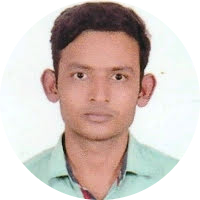

|  |
Vinay RanjanMechanical Engineering, Materials, webdevloperI am Vinay Ranjan. I am persuing my m.tech degree from Nit Warangal in Materials Technology under MME department Contac Details |
| Courses | Institute/university/School | Passing Year | Percetage/CGPA |
|---|---|---|---|
| M.Tech | National Institute of Technology | 2023 | 6.74 |
| B.Tech | SRM Institute of Science and Technology | 2018 | 7.5 |
| 12th | V.R. College, Kiratpur, Bhagwanpur | 2013 | 70.8 |
| 10th | Govt High School Turki | 2011 | 55.4 |
| Catia | AutoCAD |
| HTML | CSS |
| Javascript | Python |
| LAMMPS | Origin |